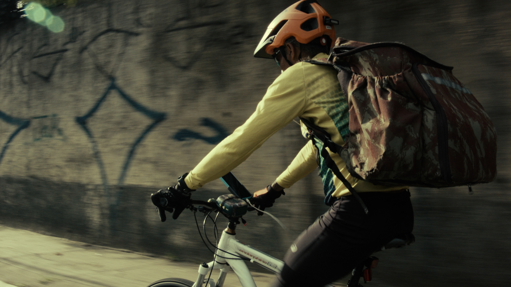

CIDADE INFINITA
"Três trabalhadores, a cidade, três desejos."

Três trabalhadores — Raimundo Barbosa (56 anos) e Lucas Diniz — tiram seu sustento cruzando a maior metrópole da América Latina em bicicleta. O filme acompanha o dia a dia e o esforço físico nas avenidas, pontes e ladeiras de São Paulo, sem sair desse raio de ação.
FICHA TÉCNICA
| Imagem e Direção | Roberto Herrera Peres |
|---|---|
| Elenco | Raimundo Barbosa, Lucas Diniz |
| Montagem | Em processo |
| Trilha Sonora Original | Som direto mineral |
| Ano Previsto | 2027 |
| País | Brasil |
| Formato | ProRes 422 HQ · DCP 2K |
| Duração | 95 min |
| Produção | RHP Filmes |
| Estágio do Projeto | Em produção / Captação (9 horas de material bruto captado em São Paulo) |
| Orçamento de Conclusão | R$ 60.000,00 (Finalização, cor, som e DCP) |
A CIDADE E O ASPOFALTO
O ponto de vista do filme é estritamente o do entregador que utiliza a bicicleta como veículo de transporte e de trabalho. O filme não responde a perguntas em forma de dados estatísticos frios, mas investiga a materialidade concreta das condições sob as quais o sistema condiciona o corpo e a vida dos envolvidos.
A pesquisa sustenta que a precarização do trabalho mediado por plataformas não é um efeito colateral imprevisto, mas o modelo estrutural de extração de valor que converte tempo de vida e desgaste biológico em margem corporativa.
DISPOSITIVO FORMAL
Filiação direta ao Cinéma-Vérité e ao Free Cinema. A câmera opera colada ao corpo em movimento, no trânsito real, sem corte antecipado para aliviar a tensão do esforço físico.
Não há entrevistas com porta-vozes institucionais de empresas de aplicativo nem trilha sonora manipulativa. O som é o registro direto mineral do asfalto, das correntes, do tráfego e das falas dos trabalhadores no momento do descanso ou da espera.
A LATÊNCIA E A DURAÇÃO
Em vez de propor um confronto melodramático convencional, a narrativa estrutura-se em ações de repetição, sustentando uma atmosfera de observação atenta. A realidade do trabalho em bicicleta em São Paulo já carrega em si toda a tensão dramática necessária.
Contato para Festivais, Mostras & Coprodução